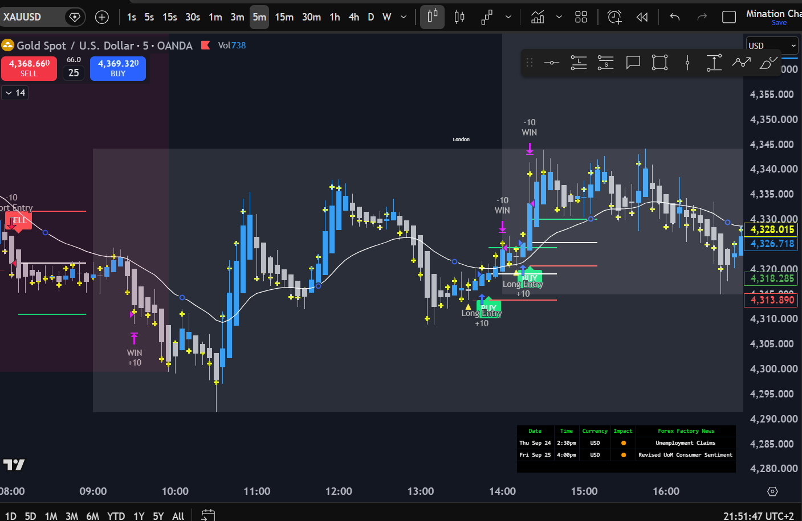
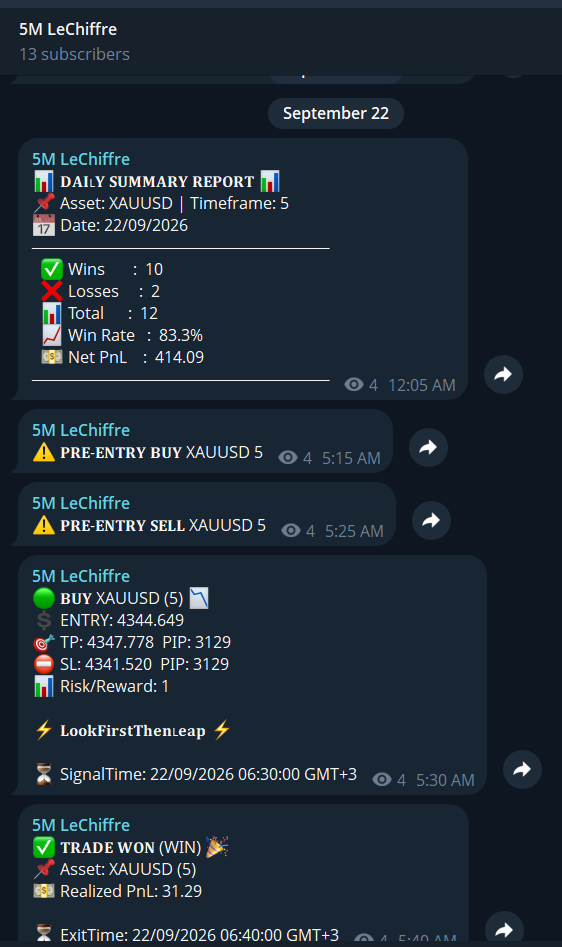

Elie Minassian · Pine Script · Algorithmic trading
LeChiffre
A rule-based method for XAUUSD. The trade is marked on TradingView in Pine Script, published as Telegram signals, and explained at lechiffre.online.
- Chart
- Pine Script on TradingView
- Signals
- Telegram · 5M LeChiffre
- Home
- lechiffre.online
TradingView indicator
The LeChiffre Pine Script runs on the gold chart. Entries, the active session, nearby news, and closed wins stay on the same screen so the decision is the line on the chart.

-
Entries
BUY and SELL marks sit on price, with the trade’s levels readable against the candles.
-
Session filters
The active window is shaded — including the London session — so trades stay inside the hours the method uses.
-
News awareness
A Forex Factory table on the chart lists upcoming items. The visible rows include U.S. unemployment claims and revised consumer sentiment.
-
Win tagging
Closed winners are labeled WIN on the chart, next to the entry that produced them.
Telegram channel
5M LeChiffre is the XAUUSD 5-minute signal channel. A message prepares the setup, the next one states the trade, a later one records the result, and the daily summary closes the book.

-
01
Pre-entry
A heads-up before the setup is confirmed. This thread shows both a pre-entry buy and a pre-entry sell on XAUUSD 5-minute.
-
02
Entry
The confirmed signal names the direction and prints entry, take profit, stop, and risk/reward.
-
03
Result
The closed trade is posted on its own card. In this example the card reads TRADE WON.
-
04
Daily summary
Wins, losses, total trades, win rate, and net PnL for that day’s XAUUSD 5-minute book.
Read from this screenshot
Daily summary for 22/09/2026: 10 wins, 2 losses, 12 trades, 83.3% win rate, net PnL 414.09. One confirmed BUY in the same thread, signaled at 06:30 GMT+3 and closed at 06:40 GMT+3.
- Entry
- 4344.649
- Take profit
- 4347.778
- Stop
- 4341.520
- Result
- TRADE WON · 31.29
lechiffre.online
Public home of the method
Rules, signals, and the chart in one place.
https://lechiffre.online/ is the site Elie built for the method: the rules, the signal room, and the custom TradingView indicator. The GitHub profile for this repository already points there.
- The method, kept short enough to follow without a new indicator every week.
- Signal room: pre-entry first, then a confirmed signal with instrument, direction, entry, stop, and target.
- The custom LeChiffre indicator on XAUUSD, plus a TradingView setup guide.
- Gold mechanics — pips, lot size, and the four sessions — and a written risk disclosure.